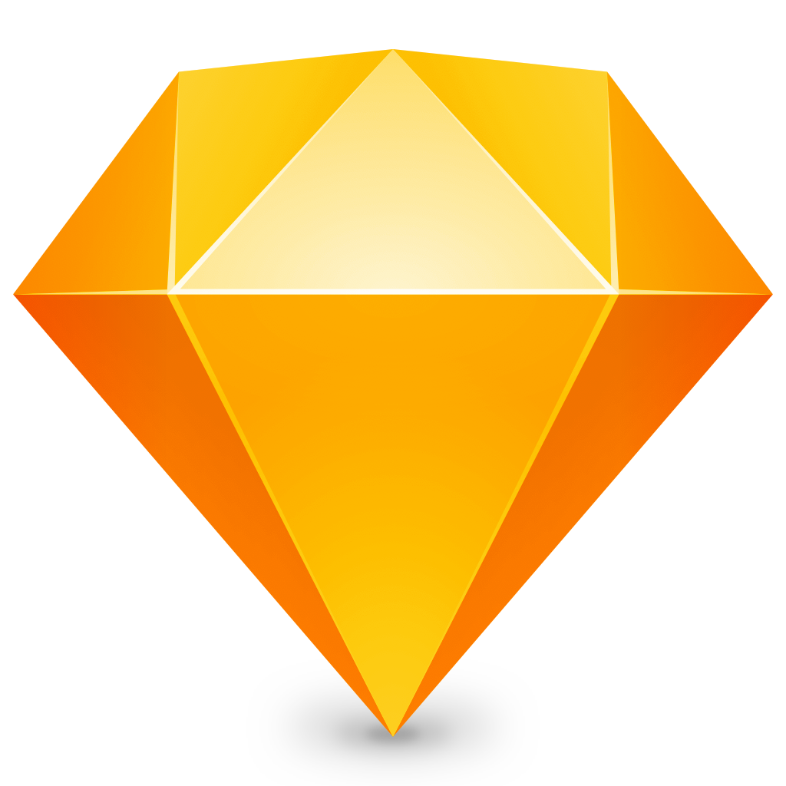
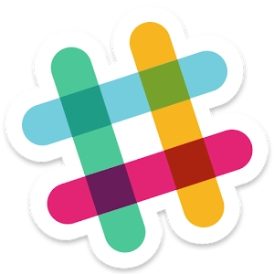

ictSolve
ictSolve
ictSolve
ictSolve

MATISE is een digital angency dat bestaat uit 14 medewerkers, Back-enders, front-enders, designers, Strategen en planners.
MATISE. Ontwikkeld website's voor bedrijven. Zoals webshops of informatieve websites. Naast de ontwikkeling van website's die ze ook ontwerpen. Bedenkt MATISE. Ook campanges en voert die samen met de partij uit.
Het is een gemoedelijk bedrijf, dat met respect met elkaar omgaat op de werkvloer. Ze helpen en ondersteunen elkaar daar waar nodig. En nemen de moeite om zaken uit te leggen. Dit alles, gaat eigenlijk altijd wel gepaard met een gezonde dosis aan humor.
Bij Matise, hebben ze niet echt standaard programma's om te gebruiken. Iedereen werkt met wat hij/zij fijn vind.
Toch zijn er hoofdzakelijke programma's die worden gebruikt, hier werkt iedereen in samen.
 Sketch
Sketch is een programma om de website's in te ontwerpen. Dit gebruikt door de designer.
 Zeplin
Zeplin
Zeplin is een programma om de design's van de website's in te bekijken. In Zeplin staan alle maten, icoontjes, kleuren die de website nodig heeft. Deze is voor de front-ender belangrijk om de website mee vorm te geven in de code.
 Harvest
Harvest
Harvest word door het team gebruikt om mee te klokken hoeveel uur zij al bezig zijn.
Dit is belangrijk voor de planner om te kijken of het team binnen het budget blijft.
 Slack
Slack word gebruikt om met elkaar te communiceren. Er worden verschillende channels (groepen) aangemaakt voor verschillende projecten. Je zit dan alleen in een channel als je ook daadwerkelijk wat moet doen voor dat project.
 Github
Github
Github is een bekende website voor developers, hier heeft Matise website's opstaan, die door het team makkelijk bewerkt kan worden. Ook worden hier pull-requests aangemaakt. Bij iedere nieuwe aanpassing, word er een request aangemaakt. Andere team-leden kijken hier naar en geven feedback op wat aangepast moeten worden. Is het goedgekeurd, word de aanpassing doorgestuurd naar de hoofd-website.